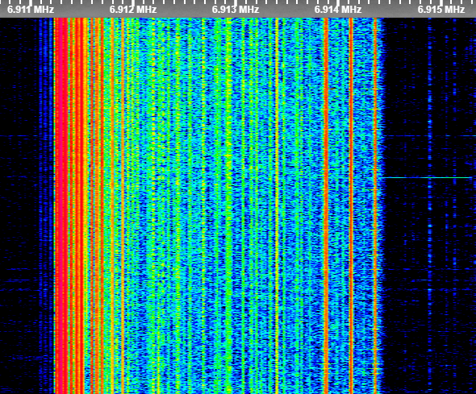

6911 Moscow Musical Network (ceased)
| Name | 6911 Moscow Musical Network (ceased) |
| Frequencies | 5287, 5362/5363, 6911, 7032, 8514, 8568, 10714, 11609 |
| Status | Inactive |
| Voice | Only twice in 2025. Overall Data/FSK/CIS/Music(to 2025) |
| Emission mode | J3E (USB) |
| Location |
Below Moscow, suspected Kolomna
|
| Activity pages | 2024 2025 2026 |

Image taken on 13.08.2026
This network was first seen logged on 1330z 1/10/2022, even though some suspect that it has been seen earlier... It first had around 6 frequencies. All of the frequencies, or most, had 50hz hum. There were a ton of frequencies popping out each day, but they were not so important. In around April 2023, the frequencies were set to 6828, 7032, 7546, 7649, 8514, 9310. At the end of 2023, 6828, 7546, 7649, and 9310 moved to the Southern Musical Network site location. On 1st March 2024, there was a 6911 tx noise. On 2nd March 2024, the network began running.
6911 was the only one with a constant "marker" while other stations contained hum or tx noise. This network had its own 3 CIS-12 frequencies (listed at the bottom of the description). This network always gave out only the Russian ЛЮБЕ Anthem at 0600z, 1300z, and 1800z every day. It also had siren traffic and an alarm. Back in 2025 on 6911 there was a automatic robotic voice twice. During May and June, there were problems with the AGC and the network overall. It turned off on 9th June 2025, moved sites, but came back on 23rd June 2025. The same thing happened multiple times during June, July, and August. At the time, the "Three Tone" signal was used on 6911 and similar frequencies. 6911 came back to this site for the last time on August 11th, 2025. Overall, this was happening more often than anyone thinks, but most of the activity wasn't logged. The network officially separated on 14th August 2025. After that date, the site was active, but the marker from 6911 was replaced with tx noise with faint cable interference and faint "Three Tone" signal. After it was replaced, one of the CIS-12 frequencies (4983) turned off and never came back.
After the shutdown, 7032 and 8514 were the only ones having any transmitter activity. 8514 had tx noise which was turning on and off sometimes, and 7032 was switching from the "Three Tones" to "Three Tone" with tx noise. After months of no traffic, on 1st April at around 0700z, 6911 turned faint, and previous frequencies belonging to this network were replaced and reorganized. Everything normalized and came back to the previous state on 2nd April 2026 when 6911 came back with a new unheard hum, and other frequencies leaked similar things. Later turned out that 6911 was connected to the site phone line... Everything has been leaked from Morse, FSKs to CISes. Rarely was voice heard... There were a few times when 6911 turned off completely for around a minute or two. Continue.
All of the musical frequencies used from 6911 Moscow Site after 2nd March 2024:
6911, 7032, 8514
All of the CIS-12 frequencies used from 6911 Moscow Site after 2nd March 2024:
4983, 7667, 8568 (Mains) | More to come here soon.
- In 2023: Birth of the first musical network.
- In 2024: 6911 birth
- From 2025: Great era, changed sites, tx noise.
- From 2026: New era, and death.
One of the weirdest sites yet...